Storia d'Italia per generazioni
Il 17 marzo 1861 il parlamento del Regno di Sardegna proclamò Vittorio Emanuele II Re d'Italia. Secondo il censimento svolto alla fine dell'anno il nuovo Regno comprendeva 22.182.377 abitanti.
Ma il numero di abitanti di un Paese non racconta tutta la storia. Per cogliere meglio la composizione demografica dell'Italia si possono usare i grafici chiamati piramide della popolazione, che mostrano la distribuzione delle popolazione per classi di età e sesso. La forma di questi grafici riflette diverse caratteristiche sociali e storiche di una popolazione.
Riportiamo qui le piramidi della popolazione italiana a partire dal 1861, in corrispondenza di tutti i censimenti. I grafici hanno tutti la stessa scala, per facilitare il confronto tra di essi.
I dati sono tratti dalle
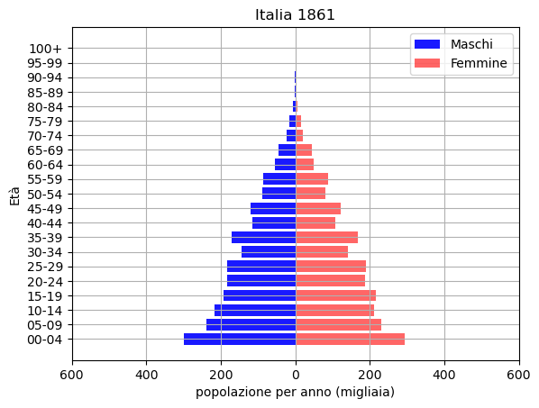
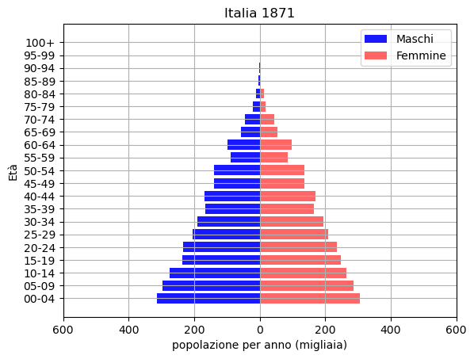
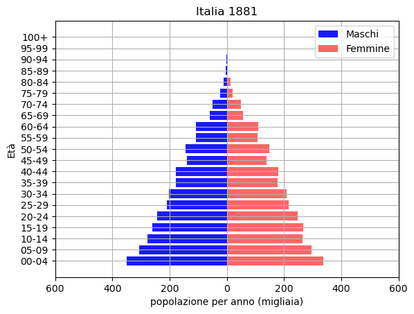
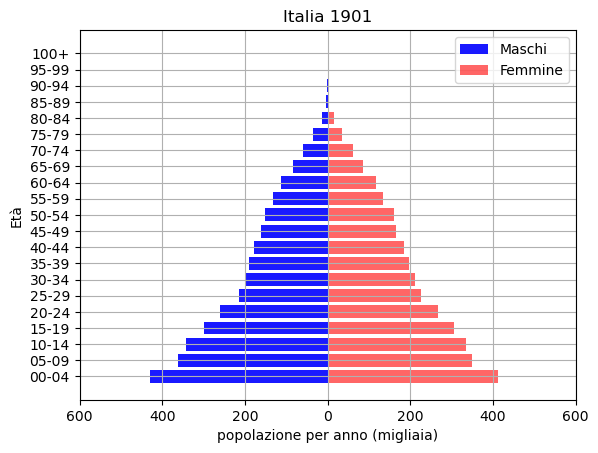
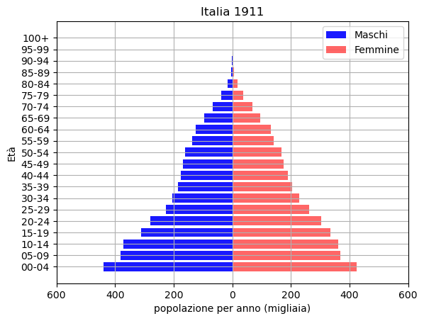
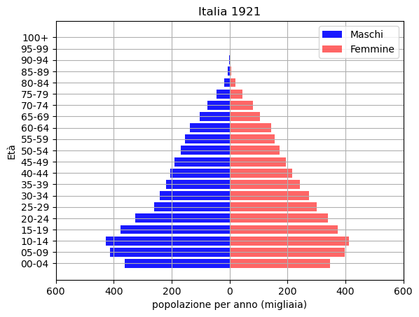
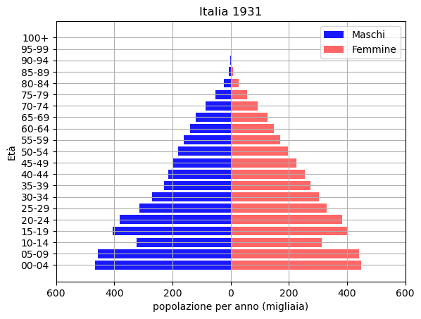
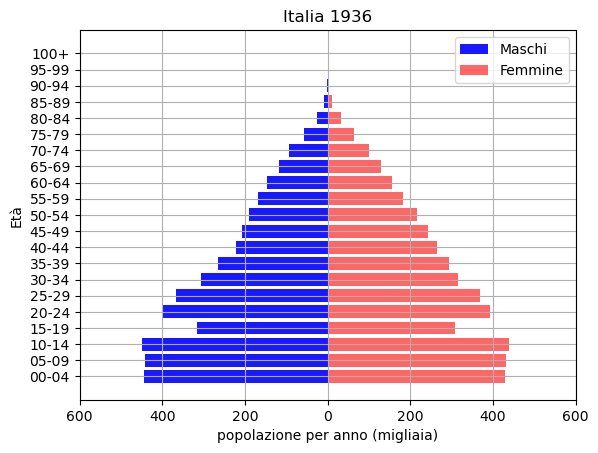
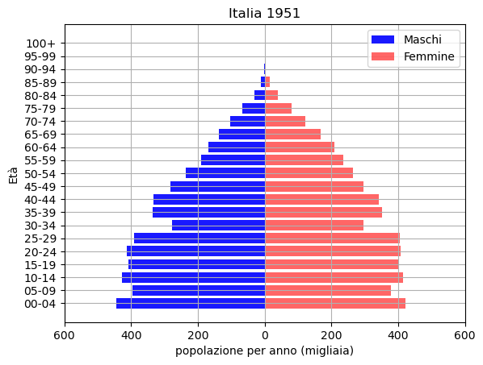
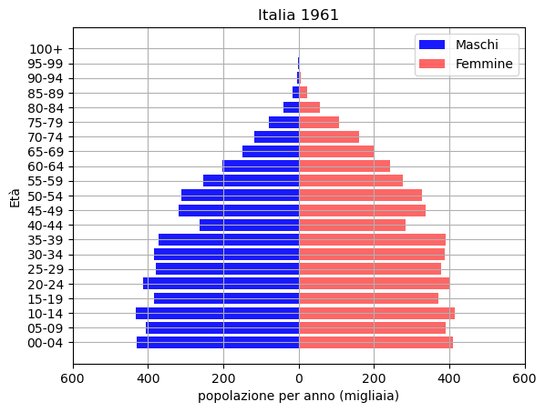
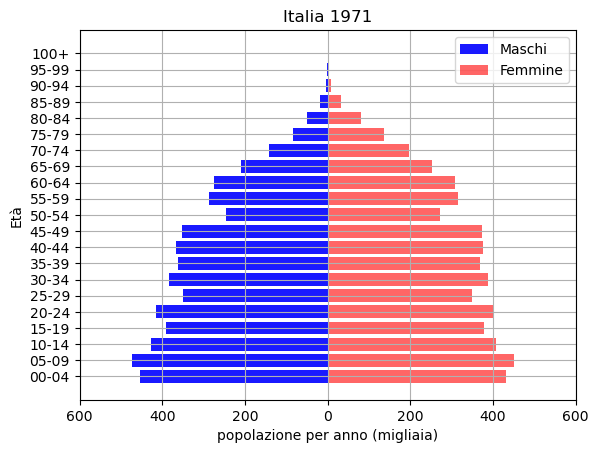
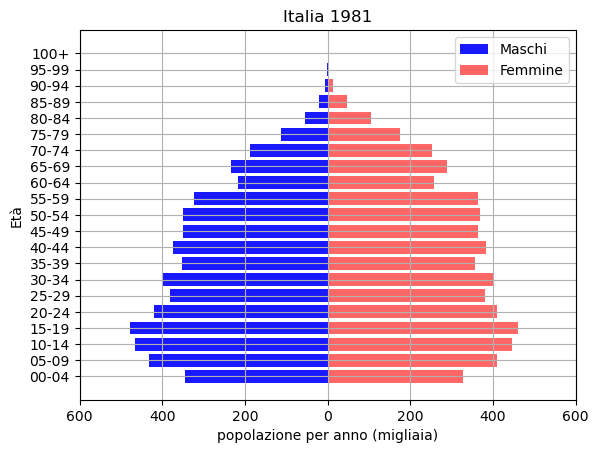
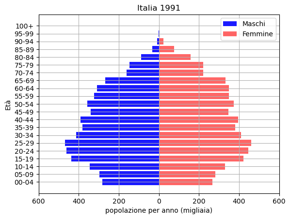
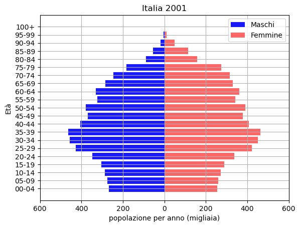
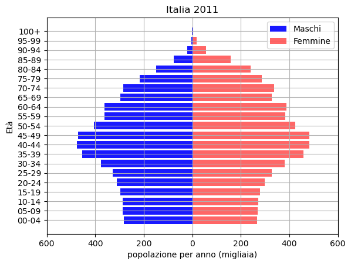
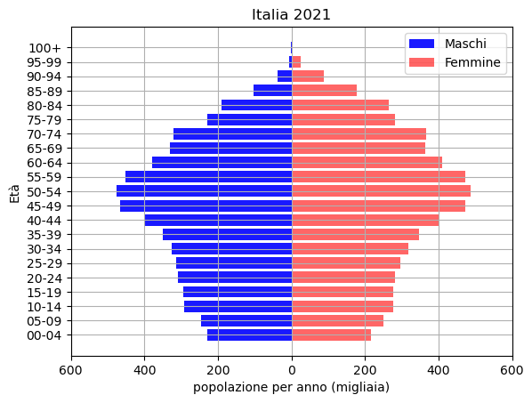
Riportiamo inoltre un grafico che descrive l'evoluzione della dinamica della popolazione italiana, tratti da un'infografica ISTAT,
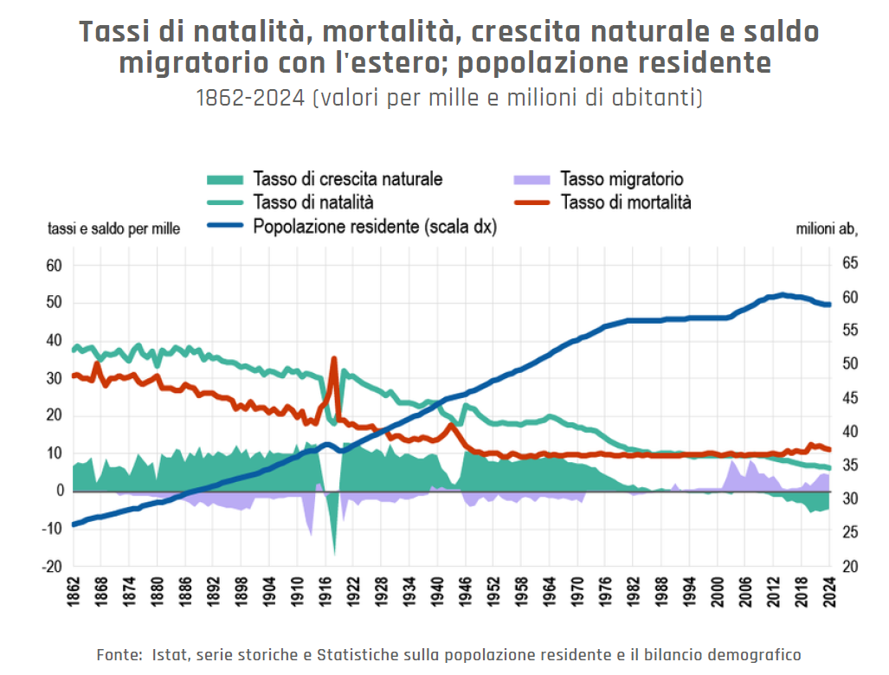
Il tasso di natalità indica il numero di bambini nati ogni mille abitanti in un anno.
Il tasso di mortalità indica il numero di morti ogni mille abitanti in un anno
Il tasso di crescita naturale è la differenza tra il tasso di natalità e il tasso di mortalità, cioè l'aumento della popolazione ogni mille abitanti senza tenere conto di emigrazione o immigrazione ma solo di nascite e morti.
Il tasso migratorio indica la variazione di popolazione ogni mille abitanti a causa di movimenti migratori in entrata o in uscita.
Guida all’analisi
Osserva le 16 piramidi della popolazione che ripercorrono la storia d'Italia:
- Come varia la forma complessiva del grafico nel corso dei 160 anni coperti? A cosa corrisponde questa variazione in termini di composizione della società?
- Una classe di età, che varia di grafico in grafico, ha un andamento anomalo rispetto al grafico complessivo. Cerca di interpretarne il significato.
- Osserva l'equilibrio tra uomini e donne all'interno di una singola piramide e al passare dei decenni e metti in evidenza eventuali anomalie.
Osserva il grafico su tasso di natalità, mortalità, crescita naturale e saldo migratorio.
- Analizza il legame tra le diverse curve.
- Cerca di interpretare le irregolarità delle curve che rappresentano i tassi di natalità, mortalità crescita naturale e saldo migratorio.
- Studia in particolare il tratto dopo 1976 in cui la popolazione complessiva rimane costante e poi riprende a salire, in relazione a natalità, mortalità e tasso migratorio.
- Da dove si può cogliere la crescita della popolazione complessiva nelle piramidi della popolazione? E il fatto che abbia raggiunto un valore costante come si riflette nelle piramidi?
- Riesci a immaginare un Paese che abbia una piramide della popolazione simile a quelle italiane del XIX secolo?
Verifica la tua ipotesi su
Population Pyramids of the World